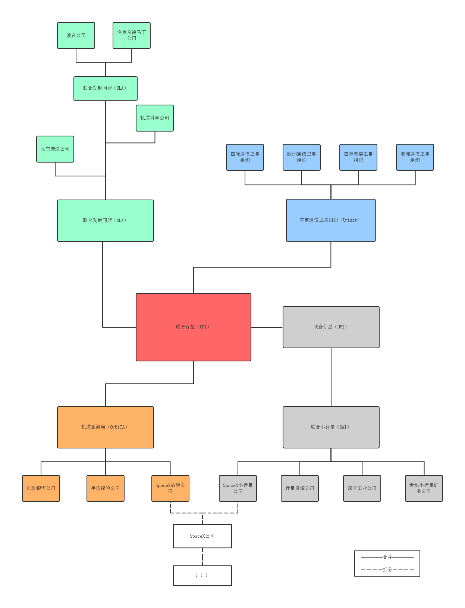

<!--  A Splash DIV -->

<div class="jumbotron splash-container">

  <h1 class="splash-boxed splash-head">
星际机构
        </h1>
    <p style="text-align:center;"><a href="#iia"><span class="label label-primary">星际移民局</span></a><span class="label">和</span><a href="#upi"><span class="label label-primary">联合行星</span></a><br><span class="label">是最著名的两大星际机构</span></p>

</div>

<!--  A Splash DIV END -->


<!-- Strip -->

<div class="alert strip" style="margin-bottom:0;">


    <p style="text-align:center;"><span class="label">更多机构的信息请参阅：</span>
<a href="InterImmBook"><span class="label label-success">《星际移民之书》</span></a>
</p>
</div>

<!-- Strip END -->


<!-- BOT well -->

<div style="background:black;padding-top:20px;">

<div class="well bs-component">

<div class="container-fluid">
<!-- row -->
<div class="row">
<div class="panel panel-primary">
      <div class="panel-heading">
        <h3 id="iia" class="panel-title" style="text-align:center;">星际移民局简介</h3>
      </div>
      <div class="panel-body" style="text-align:center;">
星际移民局，即 Interplanetary Immigration Agency，简称 IIA.
      </div>
</div>

</div>

<!-- row END -->

<div class="sect-border"></div>


<!-- another row -->
<div class="row">
<div class="panel panel-primary">
      <div class="panel-heading">
        <h3 id="upi" class="panel-title" style="text-align:center;">太空商会简介</h3>
      </div>
      <div class="panel-body" style="text-align:center;">
最主要的太空商会是联合行星（United Planet，简称 UPI），由原来的联合行星与轨道旅游局（OrbiTA），联合发射同盟（ULA） 和宇宙通信卫星组织（Unisat）合并组成。
      </div>
</div>


</div>
<!-- another row END -->
</div>


</div>
<!-- BOT well END -->


